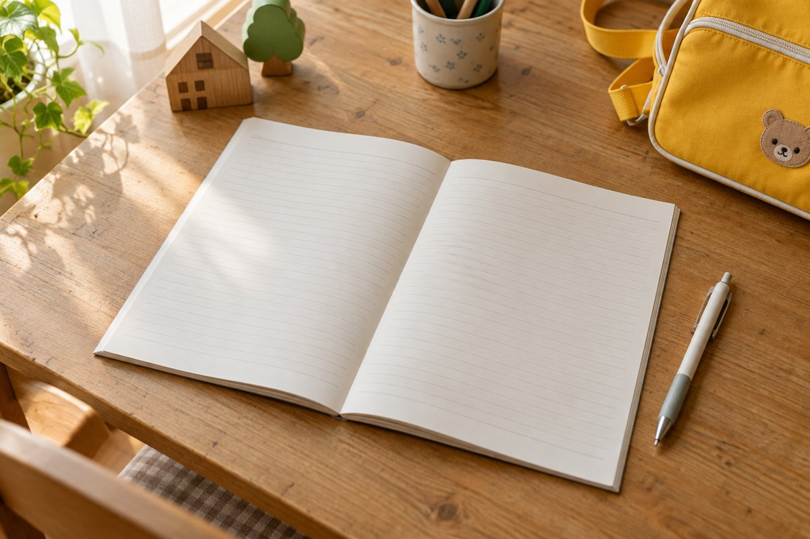

毎日、立派なエピソードを書かなくても大丈夫
連絡帳を開いたものの、「昨日もいつもと同じだったな」「何を書こう」と手が止まる朝。支度や朝ごはんで手いっぱいのときに、文章まで考えるのはなかなか大変ですよね。
私も忙しくて、「今日も元気です。今日一日もよろしくお願いします。」で済ませたことがありました。特別な出来事を書ける日ばかりではありませんし、毎回きれいな文章に整える余裕もありません。
私は、連絡帳を書くために毎日の出来事を探さなくてもいいと思っています。園で過ごすうえで伝えておきたいことが伝われば、短くてもよい。時間がある日に少し詳しく書くくらいで、続けやすくなるのではないでしょうか。
ただ、連絡帳の項目や書き方は園によって違います。食事・睡眠・排便・体温などの指定欄がある場合は、その記録と自由記入欄を分けて考えてください。「短い一言でよい」というのは、必要な記録まで省くという意味ではありません。
書くことを探す前に、今日伝える必要があることを確認
迷ったときは、面白い話を考える前に「今日はいつもと違うところがあるかな」と確かめると、書く内容を選びやすくなります。私なら、次の順に整理します。
- 体調や生活の変化：眠りが浅かった、朝食が少なかったなど、今日の様子を見るうえで共有したいこと。
- 今日の予定や連絡事項：お迎えの変更、持ち物についての確認など。園で決められた連絡方法を優先します。
- 余裕があれば家庭の一場面：遊び、会話、先生からのコメントへの返事など。
特に変わったことがなく、必要な欄も記入できていれば、「今朝も普段どおりに過ごしています。よろしくお願いします。」くらいで終える日があってもよいと思います。「長く書けたか」より、「今日の様子と必要な連絡が伝わるか」を目安にしてみてください。

書くことが思いつかない日の、短い例文
以下は、場面ごとに考えた例文です。わが家の実体験として挙げた文章とは別にしています。お子さんのその日の様子に合う情報だけを選んでください。
特に変わりなく過ごしている日
今朝も普段どおりに過ごしています。今日もよろしくお願いします。
「元気です」の一言に、何かを足さなければいけないわけではありません。指定欄で食事や睡眠を記録できているなら、自由欄で同じ内容をもう一度詳しく説明しなくても済む場合があります。
生活の様子を一つ伝えたい日
昨夜はいつもより寝つくのが遅く、今朝は少し眠そうでした。
朝食はパンを半分ほど食べました。普段より少なめです。
「よく寝ました」「あまり食べませんでした」だけだと伝わりにくいと感じたら、分かる範囲で時間や量を添える方法もあります。細かく測ったり、記録のために朝の仕事を増やしたりする必要はありません。
家での何気ない様子を書く日
昨夜は同じ絵本を二度読んでほしいと持ってきました。お気に入りになったようです。
今朝は自分で靴下を履こうとしていました。途中までですが、やりたい気持ちが出ているようです。
成長を上手にまとめようとせず、「何をしたか」を一つ書くだけでも、その子の姿が伝わります。特別なお出かけや、できるようになったことがなくても大丈夫です。
先生のコメントに返す日
昨日の砂遊びのお話を読みました。帰宅後も「お山を作った」と話していました。
お着替えの様子を教えてくださりありがとうございます。家でも、まずは自分でやってみたいようです。
園での話と家での様子がつながったときは、そのことを短く返すのも一つの書き方です。毎回感想やお礼を付けようと頑張らなくても、書きたいことがある日に伝えればよいと思います。
気になることがある日は、「見たこと」と「聞きたいこと」を分ける
困っていることを書くときも、説明を完璧にまとめなくて大丈夫です。例えば「最近ずっと機嫌が悪いです」とだけ書くより、場面を一つ挙げると相談したいことが伝わりやすくなります。
ここ数日、朝の着替えで泣くことがあります。園では着替えのときにどんな様子でしょうか。
「どんな場面で」「何があったか」「園ではどうか」を分けると、家での様子を共有しつつ、先生に聞きたい点を絞れます。原因を決めつけたり、長い説明を書いたりする必要はありません。
込み入った相談は、連絡帳だけで解決しようとせず、「一度お話しする時間を相談できますか」と伝える方法もあります。ほかの子の名前や詳しい家庭事情など、書く必要のない情報まで載せないようにします。
急ぎの連絡は、連絡帳だけに任せない
体調に変化があるときは、「元気です」の一言でまとめず、分かっている様子を具体的に伝えてください。登園できるか迷う場合は、園の基準や案内を確認し、必要に応じて園に相談します。
また、お迎えの人や時間の当日変更、すぐに確認してほしいことは、園が指定するアプリ・電話・登園時の引き継ぎなどで連絡してください。自由記入欄に書いただけで、すぐに読まれるとは限りません。
| 伝えたいこと | 考え方 |
|---|---|
| 家での遊びや普段の様子 | 自由記入欄に短く。特別な出来事を探さなくてもよい。 |
| 体調や睡眠・食事の変化 | 指定欄を記入し、共有したい変化を具体的に補足する。 |
| 当日のお迎え変更など | 園の指定方法で、必要な時刻までに伝わるように連絡する。 |
| 詳しく話したい相談 | 要点を伝え、話す時間や方法を相談する。 |
忙しい朝は、「変化があるか」を見てから一言
毎朝一から文章を考えるのが負担なら、記入の順番だけ決めておくのもよさそうです。
- 園の指定欄を埋める。
- 今日、共有したい変化や連絡事項があるか確認する。
- あればそのことを書き、なければ短い一言で終える。
紙の連絡帳でもアプリでも、書く量を増やすために無理をしなくて大丈夫。欄が広いとつい埋めたくなりますが、空いている部分を全部使うことを目標にしなくてもよいと思います。
私も「今日も元気です。今日一日もよろしくお願いします。」だけの日がありました。余裕がある日は少し詳しく、忙しい日は短く。そんなふうに肩肘張らず、必要なことを伝えながら続けていけたらいいですね。
参考：共働き保育園ナビの連絡帳の記事。短文で家庭の様子を共有する考え方を参考にしました。本文の体験談は運営者本人の経験、例文と記入の順番は本記事で整理した提案です。